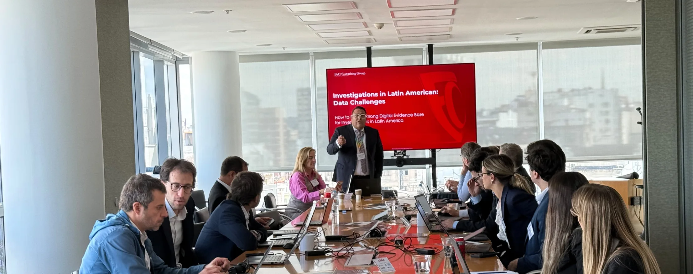
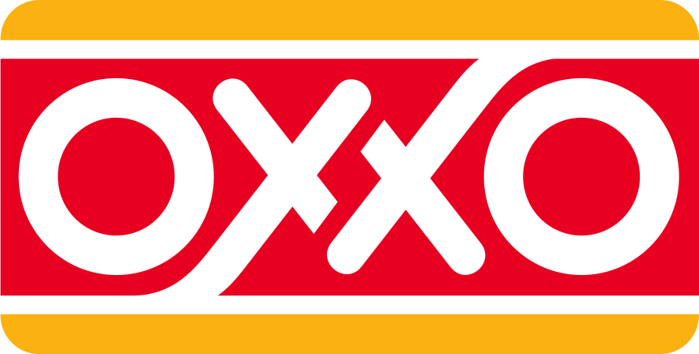
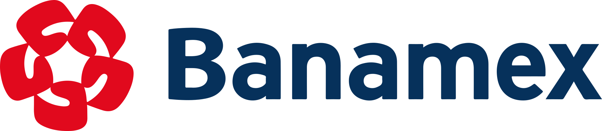
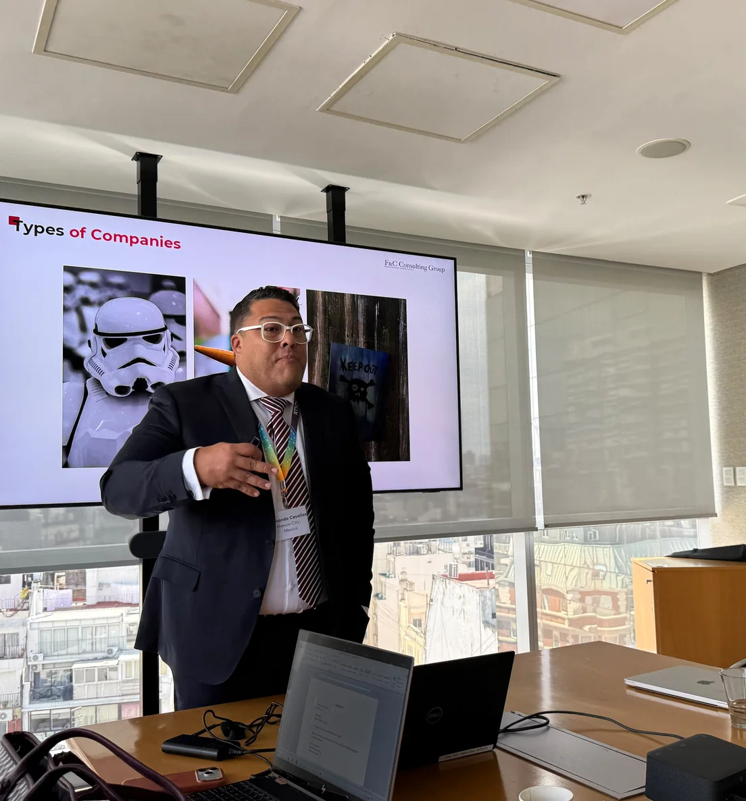
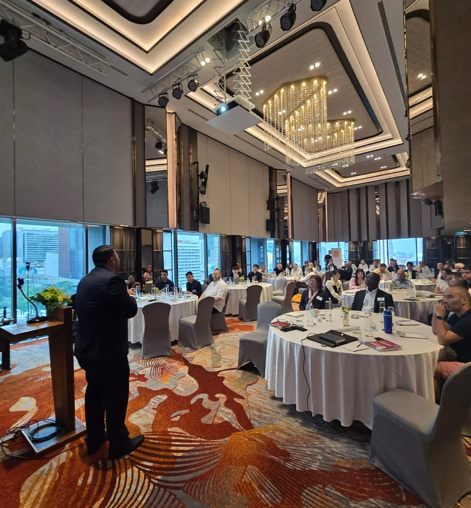

Sistemas ISO listos para certificar
Convertimos el cumplimiento normativo en un sistema real, trazable y auditable. Implementación y auditoría de ISO 37001, ISO 37301, ISO 27001, ISO 27701 e ISO 42001, desde el análisis de brecha hasta la preparación para la certificación.


Organizaciones líderes confían en nuestro criterio





Un sistema, no una carpeta
Muchas empresas tienen documentos ISO que nadie usa. Implementamos el sistema de gestión para que opere en el día a día: procesos, responsables, indicadores y evidencia que un auditor puede verificar.

Auditores líderes certificados
Nuestro equipo incluye auditores líderes e implementadores líderes certificados. Conocen la norma desde dentro y te preparan para la auditoría de certificación sin sorpresas.
Una base, cinco normas
Integra antisoborno, compliance, seguridad de la información, privacidad e inteligencia artificial en un solo sistema de gestión, reutilizando procesos, controles y evidencia.

Tu equipo también se certifica
Complementa la implementación con certificaciones PECB de Implementador Líder y Auditor Líder en F&C Academy, para que tu equipo sostenga el sistema después del proyecto.
De la brecha a la certificación ISO
Cinco etapas para implementar un sistema de gestión que se sostiene después de la auditoría.
Decisiones con evidencia, no con sospechas
El análisis de brecha convirtió un proyecto abrumador en un plan con fechas y responsables.
La empresa necesitaba ISO 37001 para participar en licitaciones. El plan priorizado ordenó la implementación por etapas.
Llegamos a la auditoría de certificación sabiendo exactamente qué nos iban a revisar.
La auditoría interna replicó el enfoque del certificador y cerró los hallazgos antes de la revisión externa.
Integrar 37001 y 27001 nos ahorró duplicar procesos y documentos.
Dos normas en paralelo duplicaban trabajo. El sistema integrado reutilizó procesos, controles y evidencia.

Empieza tu sistema ISO
Agenda una asesoría y revisamos qué norma te conviene y cuánto camino te falta para certificar.
Auditores e implementadores líderes certificados
Sistemas de gestión que se sostienen.
Preguntas frecuentes
¿Qué es un sistema de gestión ISO?
Es un conjunto de políticas, procesos, roles e indicadores que una organización opera de forma continua para cumplir una norma internacional y demostrarlo ante un auditor.
¿Qué normas implementan?
ISO 37001 (antisoborno), ISO 37301 (compliance), ISO 27001 (seguridad de la información), ISO 27701 (privacidad) e ISO 42001 (inteligencia artificial).
¿Ustedes certifican?
No. Implementamos y auditamos internamente para prepararte. La certificación la emite un organismo acreditado independiente.
¿Cuánto tarda la implementación?
Depende del alcance, la norma y tu punto de partida. El análisis de brecha nos permite darte un plan con etapas y fechas.
¿Podemos integrar varias normas?
Sí. Las normas ISO comparten estructura, así que procesos, controles y evidencia se reutilizan en un sistema integrado.
¿Qué es ISO 42001?
Es la norma de sistemas de gestión de inteligencia artificial: ayuda a usar la IA de forma responsable, con riesgos y controles definidos.
¿Mi equipo puede certificarse?
Sí. En F&C Academy ofrecemos certificaciones PECB de Implementador Líder y Auditor Líder para las mismas normas.
¿Qué pasa después de certificar?
El sistema debe mantenerse. Podemos acompañarte con auditorías internas periódicas y actualización de riesgos.